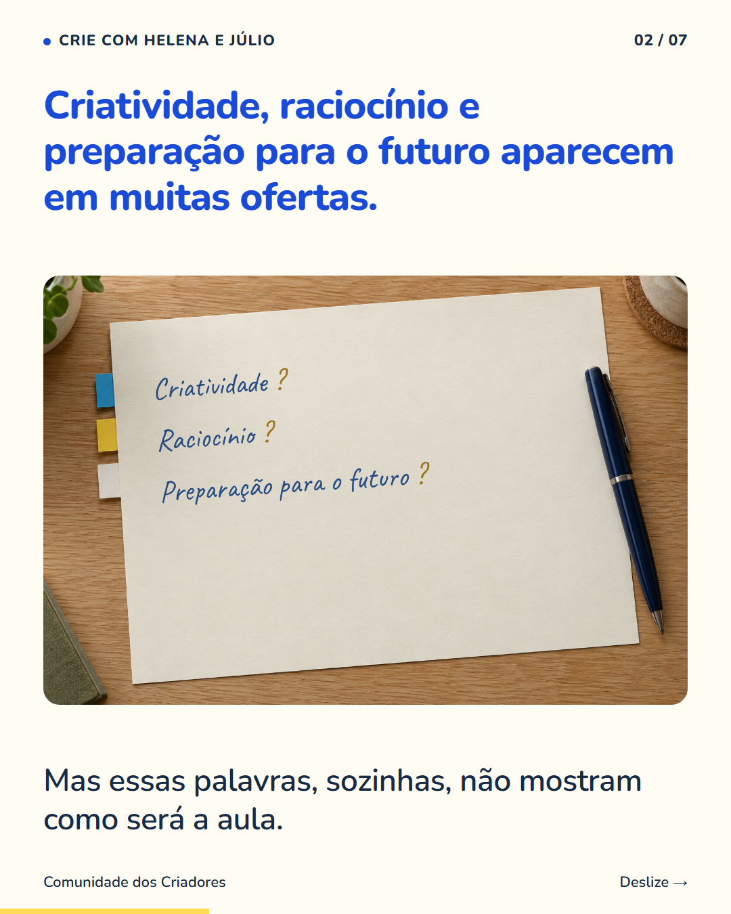
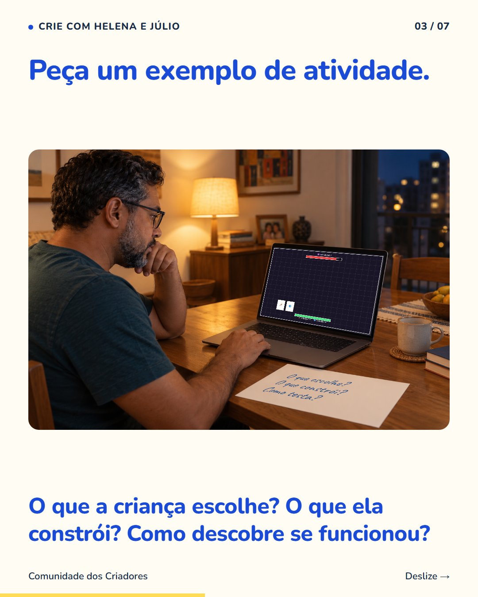
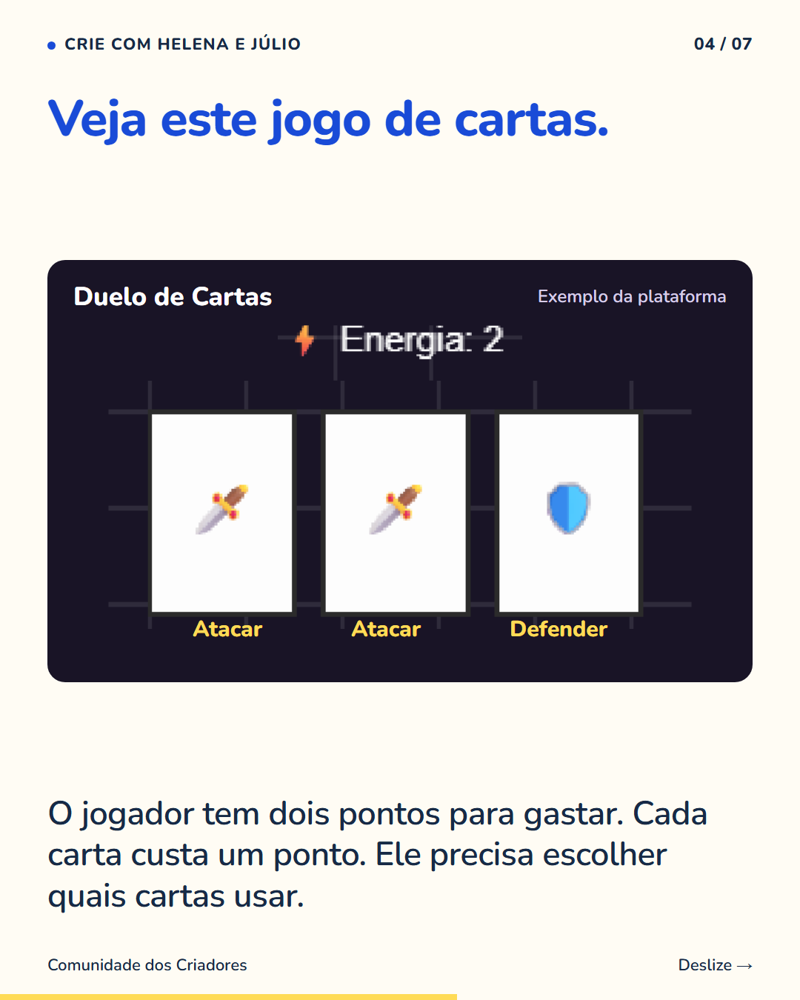
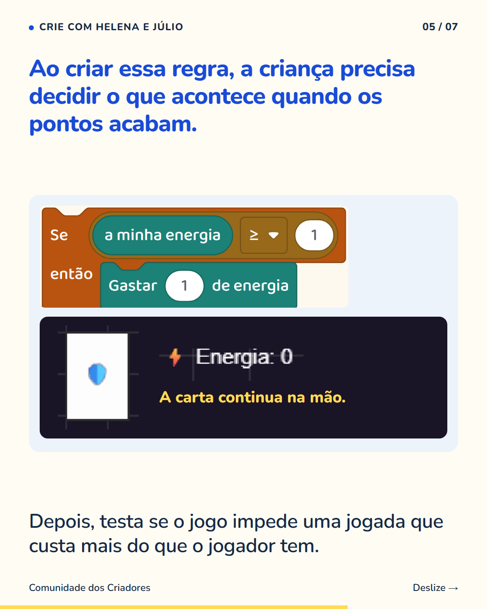
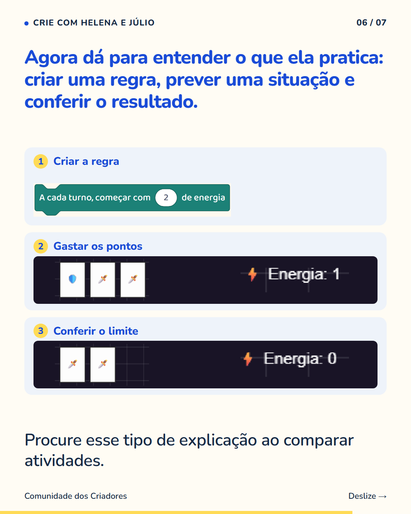
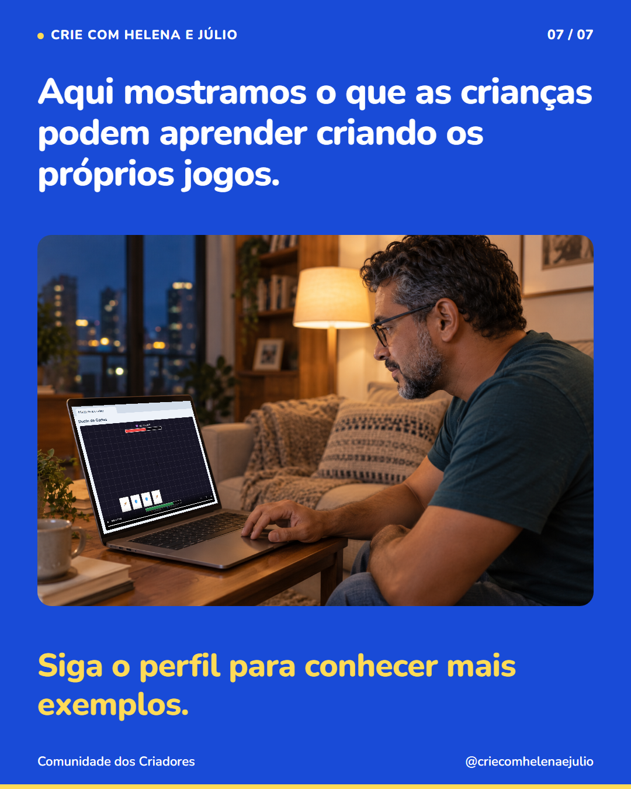

7 slides · 1080 × 1350 · Copy revisada · Regra, escolha e teste no Duelo de Cartas






Uma atividade fica mais fácil de avaliar quando você consegue imaginar seu filho fazendo cada parte. No exemplo do carrossel, criar o jogo exige decidir quanto uma carta custa, quando ela pode ser usada e o que acontece quando os pontos acabam. A criança também precisa testar essas situações. É aí que a proposta começa a fazer sentido para quem está escolhendo um curso. Ao comparar opções, peça uma aula ou uma demonstração. Observe o que o aluno faz e quais decisões ficam com ele. Um projeto bonito chama atenção; entender como a criança participa ajuda você a escolher. Siga o perfil para conhecer outras possibilidades de aprender criando jogos.